Portadas
The Neighbourhood se distingue por su estética monocromática en blanco y negro, reflejada tanto en su vestimenta, influenciada por el streetwear y elementos clásicos, como en sus portadas de álbumes y videoclips minimalistas. Su estilo visual evoca una sensación melancólica y nostálgica, con paisajes urbanos y atmósferas nocturnas que complementan sus letras introspectivas. Además, su simbología distintiva, como el logo del barrio (NBHD) y el corazón invertido, refuerza su identidad visual y es fácilmente reconocible entre sus fans.
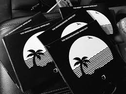
 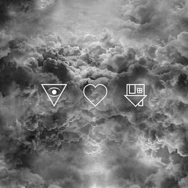
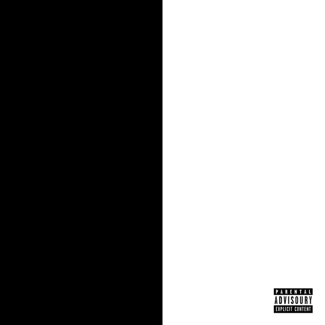
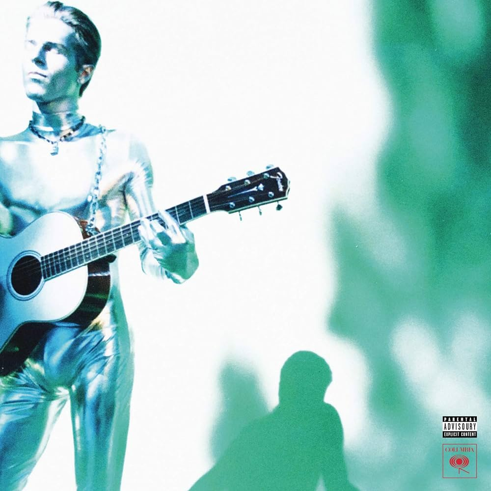
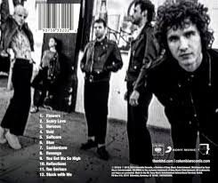
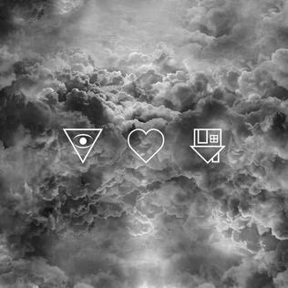
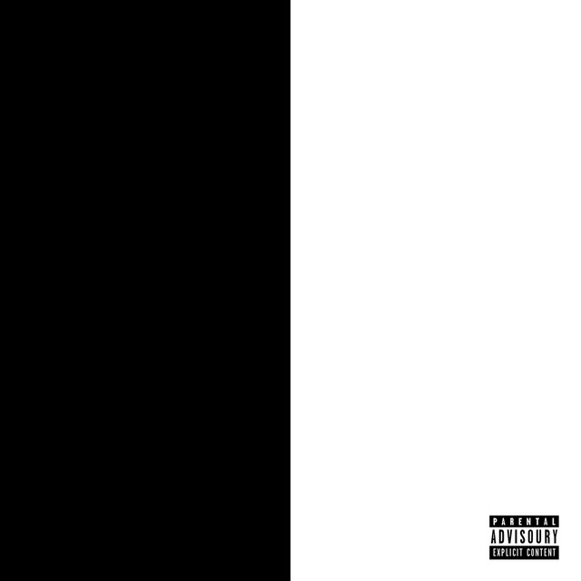
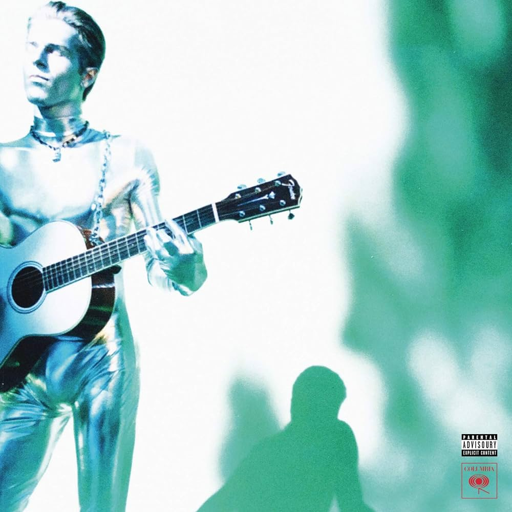
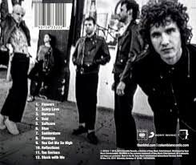
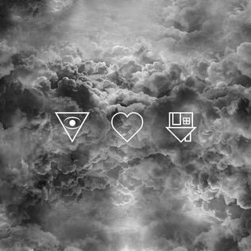
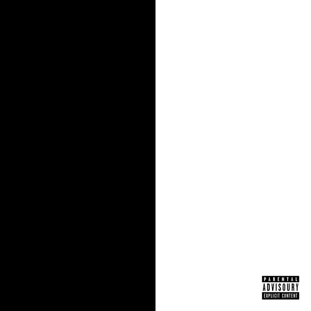
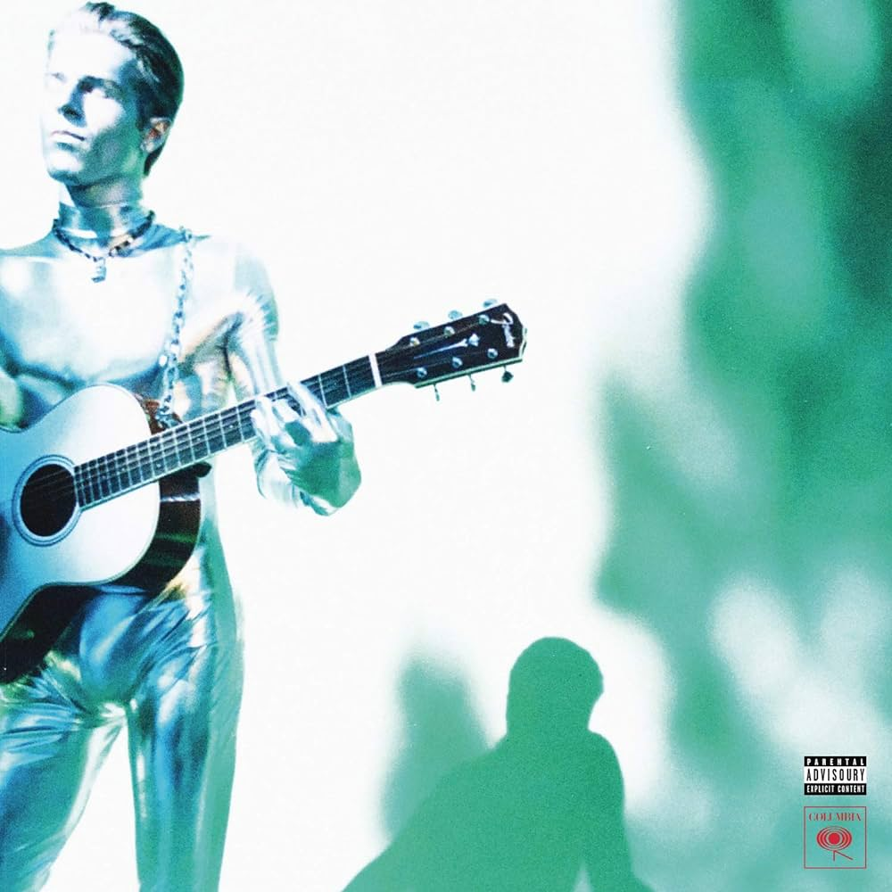
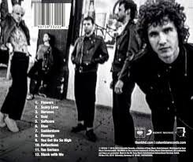